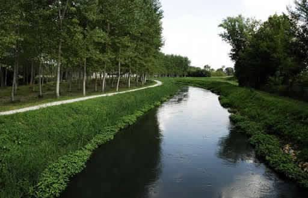

Città d’acque è un titolo che Camposampiero merita ampiamente essendo rimasto l’unico centro medioevale del territorio padovano a conservare tale carattere da quando, mezzo secolo fa, a Padova vennero interrati i canali che la attraversavano. A Camposampiero, oltre a corsi d’acqua minori quali la Rustega, il Barbacan, l’Orcone e il canale Tergolino, scorrono il Vandura, il Muson Vecchio, il Muson dei Sassi. Fu proprio su una motta nei pressi del Vandura che i Camposampiero fecero edificare il castello, mentre le sue acque vennero sdoppiate per realizzare l’anello difensivo attorno alle mura. Seguire questa fitta rete di corsi d’acqua non è facile, perché essi si nascondono sotto le strade e gli edifici, ma poco oltre riemergono, in alcuni punti con forza. Importanti opere idrauliche caratterizzano la città. Porta Antonella risale al 1485 e perfeziona un intervento idraulico operato dai Carraresi, che avevano fatto scavare il canale Musonello - oggi Tergolino - per regolare le acque del Muson Vecchio. La Serenissima intervenne perfezionando il manufatto, che è ancora oggi visibile e perfetto come un tempo. Superata villa Querini, il Muson continua il suo corso verso le Bocche, il perfetto manufatto realizzato dalla Serenissima nel 1612 che permette alle acque del Muson vecchio di passare sotto all’alveo del Muson dei Sassi.
